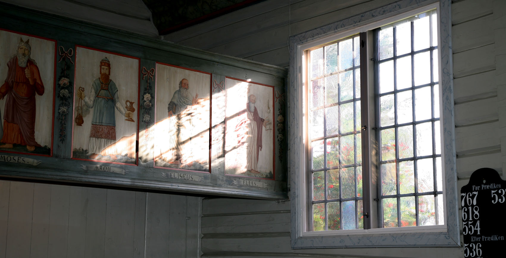
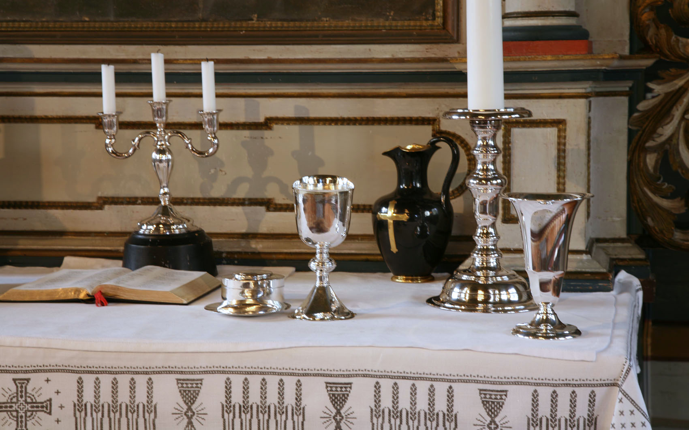
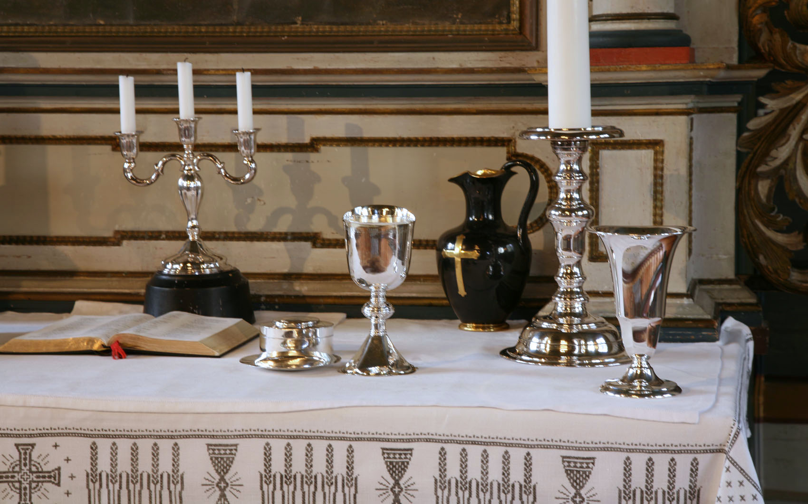
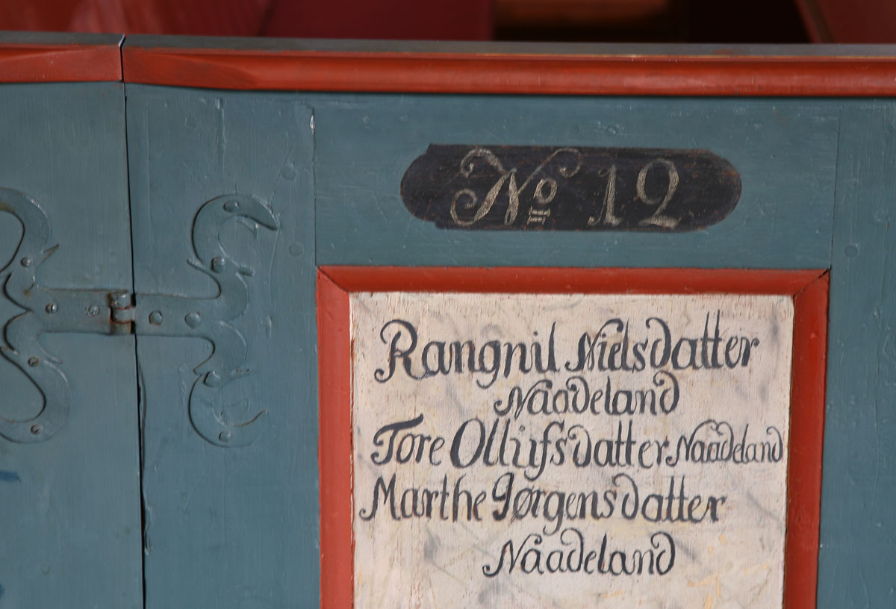
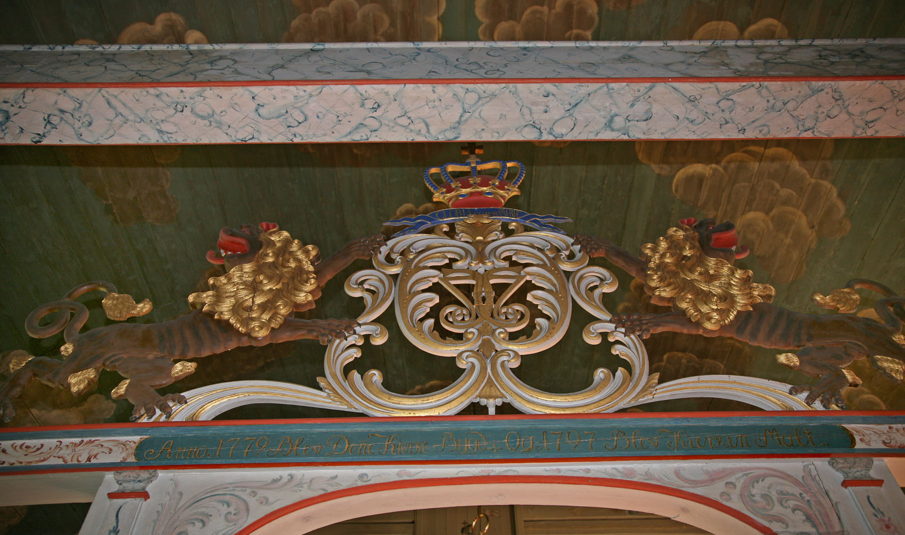
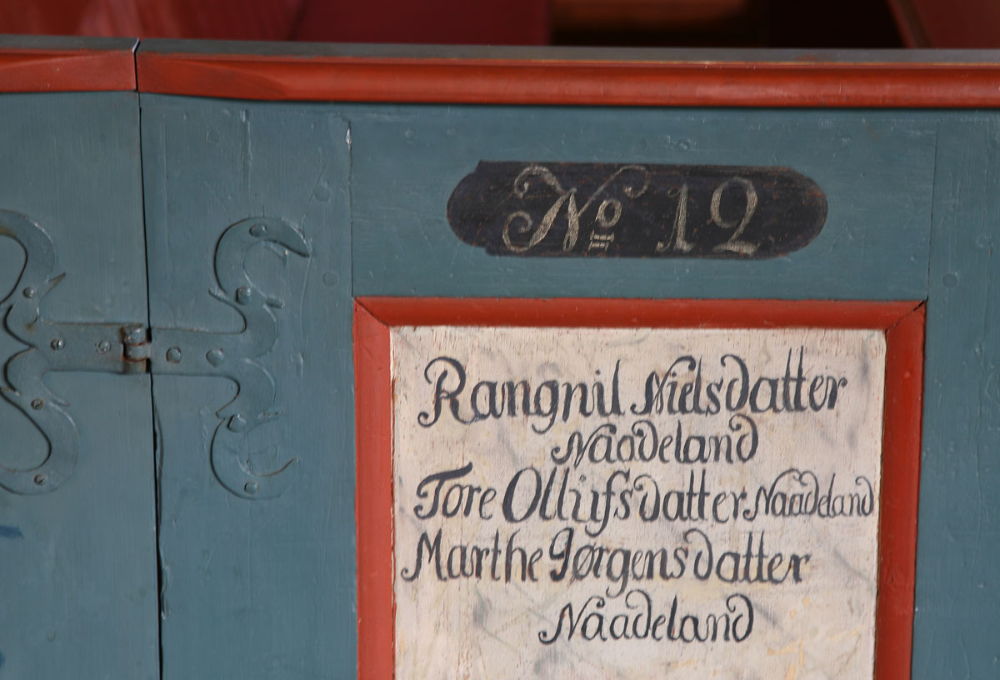
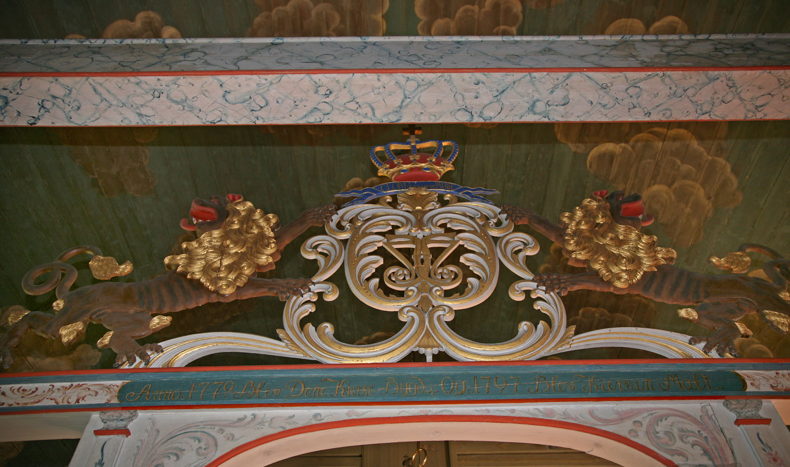

Austre Moland kirke
Foto: Torvald Slettebø, Universitetet i Agder, Seniorsenteret
Tekst: Bjarne Karsten Nenseter
Austre Moland kirke har en vakker beliggenhet ved det smilende Molandsvannet. Den er opprinnelig bygget som langkirke i tømmer og ble innviet i 1673. Trolig har det stått kirke her før denne. Blant annet skal det være omtalt en kirke i 1576 som skal være revet i 1633. Den lille langkirke fra 1673 ble ombygget og utvidet til korskirke i 1779, og ble nå en romslig kirke. Byggmester var Beint Gundersen Skjævestad.
Først litt historie. Austre Moland hørte i flere hundre år til det store Holt prestegjeld. Presteboligen i Austre Moland var den gang bolig for kapellanen i Holt. Men i 1747 ble Austre Moland sammen med Tromøy utskilt som eget prestegjeld. Tromøy ble hovedsognet, men prestegjeldet ble hetende Austre Moland, antagelig fordi soknepresten fikk sin bolig i den gamle kapellangård der. Foreningen med Tromøy varte til 1878. Da ble Barbu og Stokken - Tromøy sogns fastland - skilt ut. Barbu ble eget sognekall og Stokken anneks til Austre Moland. Ved den store kommunesammenslåing i 1960-årene ble Flosta sogn også lagt til Austre Moland som anneks. Fra 1.1.1992 hører hele prestegjeldet til Arendal kommune.Den lille langkirke utgjør etter ombyggingen, vestskipet i den ombygde kirke. Kirken fikk nytt tårn med hovedspir og fire mindre spir. Det er bygd av Ole Nilsen Weierholt fra Austre Moland. Han er også mester for den praktfulle baldakin over hovedinngangen. Likeså er han mester for det vakre alterpartiet med den rikt utskårne ramme og krusifikset over alterbildet. Billedskjærer Christian Suchow's tavle i Holt kirke er nok forbilde. Ole Nilsen Weierholt er klokkersønn fra Austre Moland, født «til den syndige verden Anno 1718 den 29. desember klokken 6 over midnatt» som hans far skrev ned. Ole Nilsen Weierholt begynte beskjedent som tømmermann og treskjærer i sin hjembygd, men endte som Sørlandsrokokkoens mester. Bl.a. fikk han et sølvbeger fra kong Christian VII med følgende inskripsjon: «Bevis på Belønning og videre Oppmuntring for Ole Nilsen Weierholt's rare Flid og konstige Arbeide 1774». Som kjent har han utført betydelige arbeider også i kirkene i Tromøy, Dypvåg, Søndeled og Risør. En annen molending, Niels Fløystad, har skåret Christian VII's monogram og løvene på korskillebjelken. Hele interiøret med skyer og engler i taket ble malt av Anders G. Løwe i 1797. Årstallet finner en på korbjelken. Malerens svenn, Nils Christensen, har malt gallerifrontenes profeter og apostler. Alterbilde og prekestolen er muligens malt av en dansk maler. Kirken er en av de få som har malt dekor rundt vinduene på ytterveggene. I våpenhuset er malt søyler med navnene på prestene i Austre Moland.Kirkeklokkeneerfra 1752 og 1754. På kirkegården har en funnet et middelaldersk sarkofaglokk med opphøyet kors.Det gamle praktfulle interiør forsvant da kirken ble panelt og malt i 1870-årene. De gamle kirkebenkene med dører ble erstattet av nye. men menigheten glemte ikke det vakre interiør kirken hadde hatt. Interessen for restaurering våknet etterhvert. Restaureringskonsulent Finn Krafft ble budsendt. Han utarbeidet allerede i 1922 en plan for restaurering. Nå begynte snøballen å rulle. Under ledelse av Finn Krafft ble så kirken møysommelig ført tilbake til det den var før «restaureringen» i 1870-årene. Kirken fikk tilbake de gamle benkevanger med dører og det fargerike interiør. Om alt dette kan en lese i den interessante og vakre bok som kom ut til 300 års jubileet for kirken i 1973, skrevet av molendingen, skolestyrer Olav Weierholt.
Når en går inn i det harmoniske Gudshus blir en minnet om den latinske innskriften på den praktfulle portalbaldakinen over inngangsdøren. Den lyder i oversettelse: Dette er helligdommen - Lover Herren. - Dette er tilbedelsens sted.
Teksten er hentet fra Bjarne Karsten Nenseters bok ”PÅ KIRKEVANDRING I AUST-AGDER”, som han utga i 1993, på grunnlag av sine artikler i Agderposten i 1950-årene, da han var prest i Aust-Agder. Vi gjengir her teksten med tillatelse fra Nenseters arvinger



 

 


